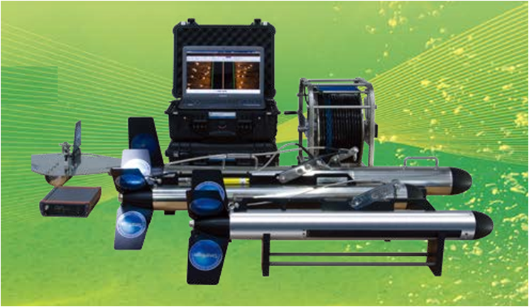

The single beam side scan sonar provides dual frequency from 100kHz up to 1250kHz which supports high resolution images. On each side of a towfish or AUV/ROV, this system generates single beam with advanced beam forming techniques and shows an extremely sharp along track resolution even when being towed at high speed with full bottom coverage.
Applications
- Geographical surveys
- Route / Q-route surveys
- Shipwreck & Airplane location
- Pipeline & Offshore surveys
- Search & Recovery for Rescue
Key Features
- Single beam dual frequency
- The most high resolution images
- Triple prevented function of loss
- Motion / Depth / Altimeter equipped
- Compatible with 3rd party software
